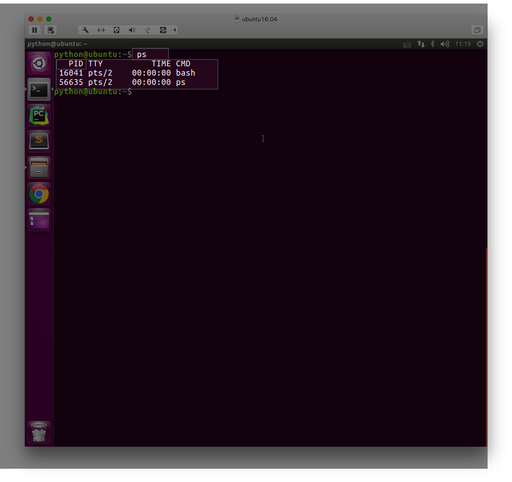
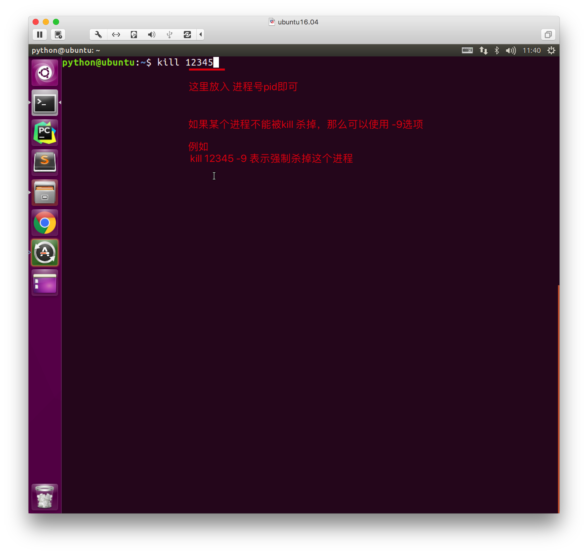

创建进程方式1
0. 回忆创建线程的方式
import threading
def task():
"""子线程要执行的代码"""
pass
t = threading.Thread(target=task)
t.start()
1. 引入
multiprocessing模块是跨平台版本的多进程模块，提供了一个Process类来创建一个进程对象，这个对象可以理解为是一个独立的进程，可以执行另外的事情
2. 示例代码
from multiprocessing import Process
import time
def test():
"""子进程单独执行的代码"""
while True:
print('---test---')
time.sleep(1)
if __name__ == '__main__':
p=Process(target=test)
p.start()
# 主进程单独执行的代码
while True:
print('---main---')
time.sleep(1)
小结
- 通过额外创建一个进程，可以实现多任务
- 使用进程实现多任务的流程：
- 创建一个Process对象，且在创建时通过target指定一个函数的引用
- 当调用start时，会真正的创建一个子进程
3. 进程PID(进程号)
from multiprocessing import Process
import os
import time
def run_proc():
"""子进程要执行的代码"""
print('子进程运行中，pid=%d...' % os.getpid()) # os.getpid获取当前进程的进程号
print('子进程将要结束...')
if __name__ == '__main__':
print('父进程pid: %d' % os.getpid()) # os.getpid获取当前进程的进程号
p = Process(target=run_proc)
p.start()
小结
每个进程都有1个数字来标记，这个数字称之为进程号
Linux系统中查看PID的命令是
ps
可以通过Linux命令
kill pid的方式结束一个进程，如果进程结束了，就表示这个程序运行结束
4. Process创建的实例对象的常用方法
- start()：启动子进程实例（创建子进程）
- is_alive()：判断子进程是否还在活着
- join([timeout])：是否等待子进程执行结束，或等待多少秒
- terminate()：不管任务是否完成，立即终止子进程